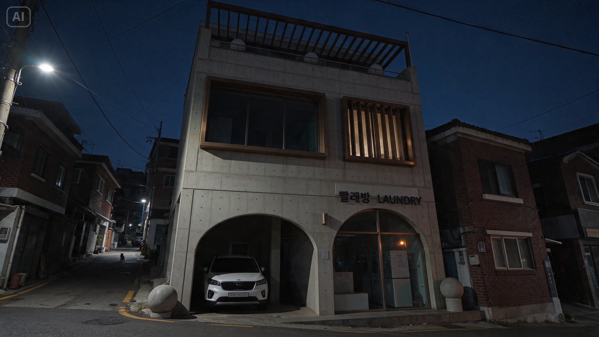
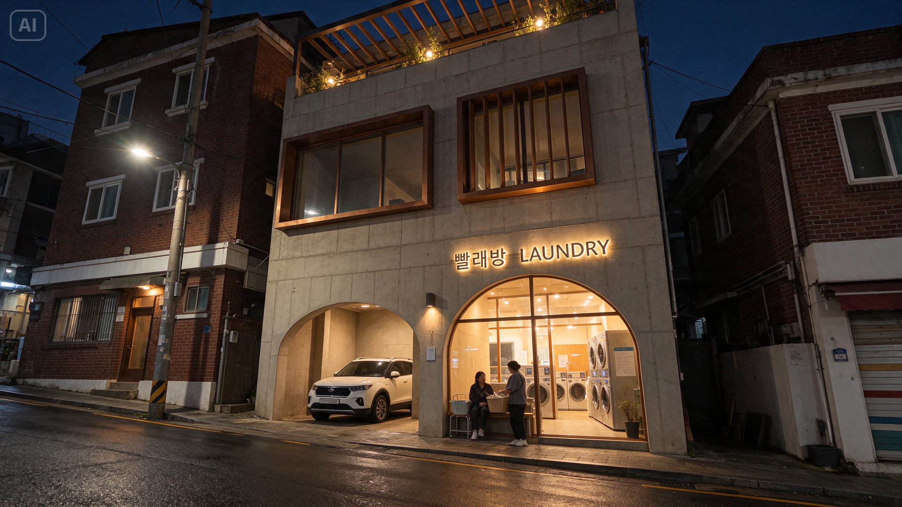

해방촌 16-11
/
조감
사이트 분석
둘러보기
층별
단면
갤러리
도면집
정보
발표
렌더 프롬프트
3D
렌더
←
→
크게
3D로
SITE ANALYSIS
— 해방촌 16-11 · 세 시간의 집
인쇄 / PDF
✕
DRAWINGS
— 세 시간의 집 도면집 (A1 · 30장)
원본 크게
3D에서 보기
✕
✕
모델 불러오는 중…


해방촌 16-11 · 신흥로 82-1 · 대지 98.84㎡
세 시간의 집
3대 가족이 사는 30평 집. 1층은 골목이 같이 쓰는 빨래방.
평일 오전
동네가 가장 비는 시간
새벽 3시
사는 사람만 남는 시간
토요일 저녁 8시
방문객이 가장 많은 시간
3D 모형 둘러보기
렌더 20장
도면집 30장
사이트 분석
발표